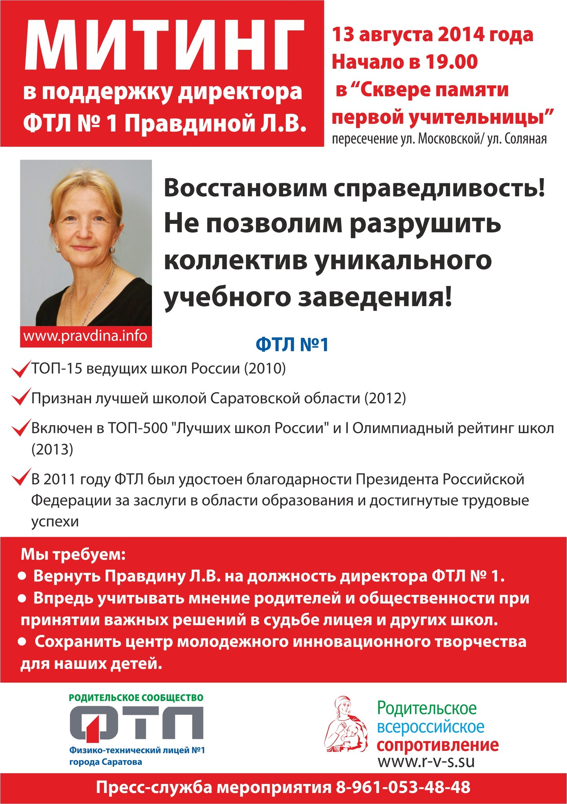
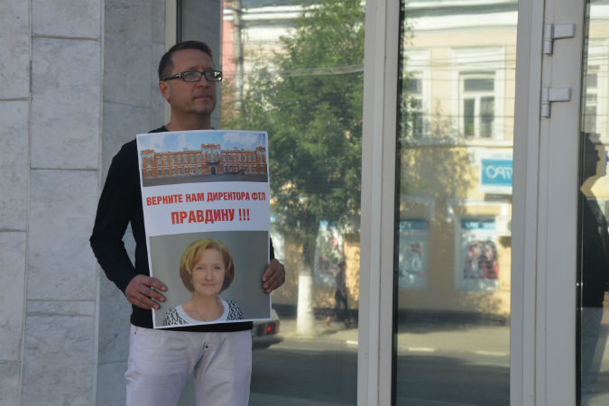

Восстановление Правдиной Л. В. в должности директора ФТЛ №1
(бывший сайт pravdina.info)
Проблема
17 июля 2014 года в Саратове без объяснения причин была уволена директор ФТЛ №1 Людмила Вениаминовна Правдина. Уже 19 июля выпускники лицея создали сайт поддержки - pravdina.info, на котором собрали более 1000 подписей в поддержку Людмилы Вениаминовны. Также на сайте освещалась вся информация об инциденте. 13 августа 2014 года после месяца упорной борьбы за честь и достоинство Людмила Вениаминовна была восстановлена в своей должности. На этой странице теперь представлена архивная копия сайта pravdina.info.
Документы
Ответ на обращение в министерство образования Саратовской областиОтвет на обращение в администрацию Президента
Интервью Правдиной Л.В. для информационного агенства "Вгляд-инфо"
Обращение родителей ФТЛ №1 (301 подпись)
Официальное обращение Правдиной Л.В. в связи с ее увольнением с поста директора ФТЛ №1
Статья о ФТЛ №1 в журнале СГТУ "Инновации и Паблисити"
Открытое письмо членов жюри муниципального и регионального этапов Всероссийской олимпиады школьников по физике
Новости СМИ
15 августа 2014 года
Спикер облдумы: «Беспокоиться родителям не о чем»Восторжествует ли Правдина в ФТЛ
14 августа 2014 года
Владимир Капкаев: "Эффективных руководителей школ без достаточных оснований увольнять не будут"Победа общественной кампании. Восстановлена директор саратовского лицея.
Владимир Капкаев нашел законный способ передать ФТЛ в подчинение области
На пути от «населения» к «народу»
В лицей вернули старый режим
Владимир Капкаев: «Губернатор поддержал Людмилу Вениаминовну, а муниципалитет прислушался к его мнению»
13 августа 2014 года
Восторжествует ли Правдина в ФТЛПравдиной предложили стать членом жюри конкурса «Учитель года России»
Людмила Правдина вернулась в ФТЛ
Людмилу Правдину восстановили в должности директора ФТЛ
FREE-TV. Счастливое возвращение
Людмила Правдина дала первое интервью в должности директора
Адвокат Людмилы Правдиной о председателе комитета образования Архиповой: "Ее нужно держать подальше от детей"
Людмила Правдина: «Вернулась, как в родной дом!
Комитет образования обвинили в обмане губернатора и главы администрации
Людмила Правдина поблагодарила власти города и области за поддержку
Буренин пообещал помогать ФТЛ и инновационному центру
Отменен сегодняшний митинг в защиту директора ФТЛ Людмилы Правдиной
Людмила Правдина восстановлена в должности директора ФТЛ
Людмила Правдина: в администрацию меня пригласили после разговора с губернатором
Капкаев доволен согласованной позицией власти по Людмиле Правдиной
Блоггер Владимир Фадеев: "Правда за Правдиной"
Спикер облдумы считает восстановление Правдиной заслугой губернатора
Группа поддержки Людмилы Правдиной отказалась от проведения митинга
Организаторы митинга в защиту Людмилы Правдиной отказались от его проведения
Отменен митинг в защиту руководителя ФТЛ Людмилы Правдиной
Родители учеников ФТЛ отменили пикет в защиту Людмилы Правдиной
Организаторы митинга в защиту Людмилы Правдиной отменили акцию
Организаторы отменили митинг в защиту Людмилы Правдиной
Правдину восстановили в должности директора ФТЛ № 1
Людмила Правдина восстановлена в должности директора ФТЛ
Людмилу Правдину вернули в ФТЛ
Людмила Правдина, восстановленная в должности директора ФТЛ: «Будем работать вместе с администрацией на благо наших учеников»
Уволенный директор ФТЛ Людмила Правдина возвращается на работу
Людмилу Правдину назначили на должность директора саратовского лицея
Людмила Правдина: мы достигли взаимопонимания с главой администрации города
Людмила Правдина восстановлена в должности
Митинг в поддержку Людмилы Правдиной отменили
Людмилу Правдину официально вернули на должность директора ФТЛ
Людмила Правдина восстановлена в должности директора ФТЛ №1
Александр Буренин снова назначил Людмилу Правдину директором ФТЛ
В администрации подтвердили возвращение Правдиной на пост директора ФТЛ
Людмила Правдина вернулась на пост директора ФТЛ
Людмила Правдина назначена директором Физико-технического лицея №1
Людмила Правдина подписала трудовой договор
Людмила Правдина сегодня официально назначена директором МАОУ "Физико-технический лицей 1"
СМИ: Людмилу Правдину восстановили директором ФТЛ
Людмилу Правдину могут восстановить в должности директора ФТЛ
Людмила Правдина может быть восстановлена в должности уже сегодня
Людмилу Правдину восстановили в должности директора ФТЛ Саратова
Людмила Правдина будет восстановлена в должности директора ФТЛ
Людмила Правдина восстановлена в должности директора ФТЛ
Людмила Правдина востановлена в должности директора ФТЛ
Людмилу Правдину восстановили в качестве директора ФТЛ
Дмитрий Коннычев об увольнении Правдиной: людей возмущает то, что с ними так обошлись
Пожаров: «Непонятно, почему вокруг благого начинания вдруг началась какая-то возня»
12 августа 2014 года
Министр экономического развития Саратовской области о Центре инноваций ФТЛ: «Отстаивание мелочных интересов может нанести ущерб имиджу города»Правозащитник об увольнении Правдиной: «У нас местное самоуправление заигралось, почувствовало себя властью, которой оно не является по определению»
Министр пригрозил вернуть оборудование инновационного центра при ФТЛ в Москву
В конфликт вокруг ФТЛ вмешался министр экономического развития
Комитет по образованию не позволил забрать оборудование ЦМИТа из ФТЛ
Комитет по образованию не дал вывезти оборудование инновационного центра из ФТЛ
Экс-директор ФТЛ №1 будет оспаривать приказ о своем увольнении
Увольнение Правдиной. Омбудсмен не согласилась с мнением администрации
Региональный омбудсмен о Людмиле Правдиной: «Не ошибается лишь тот, кто ничего не делает»
Уполномоченный по правам человека в Саратовской области: чиновники городской администрации не хотят видеть успехов Людмилы Правдиной
Саратовская омбудсвумен поддержала экс-директора ФТЛ
Омбудсмен Татьяна Журик выступила в защиту экс-директора ФТЛ
Саратовский губернатор поддержал Людмилу Правдину
Замглавы мэрии Саратова разочаровался в Людмиле Правдиной
11 августа 2014 года
Губернатор Валерий Радаев поддержал позицию Людмилы ПравдинойОлег Грищенко: Людмилу Правдину могут привлечь к уголовной ответственности
Саратовский губернатор поддержал Людмилу Правдину
Олег Грищенко скептически отнесся к высказываниям Валерия Радаева по поводу Людмилы Правдиной
Шансы уволенного в Саратове директора ФТЛ Людмилы Правдиной возрастают
Грищенко: Радаев мог поддержать Правдину "только по отдельным направлениям"
Общественник считает поведение экс-директора ФТЛ "непедагогичным"
Людмила Правдина: «Меня упрекали в том, что всю эту лавину поддержки организовала я сама себе»
Вадим Дубривный рассказал "всю правду" об увольнении директора ФТЛ Саратова
Замглавы администрации Саратова об уволенном директоре ФТЛ: «В лицее выявлено нарушений на шесть миллионов рублей»
Валерий Радаев поддержал Людмилу Правдину
Чиновник заявила о финансовых нарушениях в деятельности директора ФТЛ
Вадим Дубривный: "Людмила Правдина получила пять дисциплинарных взысканий"
Губернатор Саратовской области поддержал уволенного директора ФТЛ
Валерий Радаев поддержал Людмилу Правдину в борьбе за пост директора ФТЛ
Людмила Правдина оспорила приказ о ее увольнении
Валерий Радаев выразил поддержку Людмиле Правдиной
ВАЛЕРИЙ РАДАЕВ ВСТРЕТИЛСЯ С ЛЮДМИЛОЙ ПРАВДИНОЙ И ПОДДЕРЖАЛ ЕЁ
Валерий Радаев поддержал Людмилу Правдину в ее борьбе за пост директора ФТЛ
Валерий Радаев поддержал Людмилу Правдину
Губернатор выразил поддержку экс-директору ФТЛ
Адвокат Людмилы Правдиной считает, что председатель комитета по образованию города «подставила свое руководство»
Директор ООО "ЦЕНТРИТ" рассказал, куда тратились миллионы рублей
Людмила Правдина: "Я хочу вернуться в лицей"
Людмила Правдина: Председатель комитета по образованию предлагала перенести инновационный центр из ФТЛ в городской Дворец детского творчества
Правдина через суд пытается вернуть себе должность директора ФТЛ
Бывший директор ФТЛ: "Комитет образования предлагал мне передать оборудование образовательного центра городскому дворцу творчества"
Адвокат: «Кто-то положил глаз» на инновационный центр ФТЛ
Центр молодежного инновационного творчества перевезут из саратовского ФТЛ в СГТУ
Людмила Правдина: увольнение не было связано лично со мной
Людмила Правдина: «Я не давала повода поливать меня грязью»
Экс-директор ФТЛ Правдина: Из моего увольнения сделали шоу
Сотрудники прокуратуры проводят проверку в ФТЛ Саратова после увольнения директора
Уволенный директор саратовского ФТЛ подала в суд иск о восстановлении на работе
Председатель городского комитета по образованию заявляет о «попытке силового возвращения» должности бывшему директору ФТЛ
Председатель комитета по образованию Саратова о Людмиле Правдиной, уволенной из ФТЛ: «Хороший педагог и хороший директор — разные понятия»
Председатель комитета образования Архипова расценила действия защитников Правдиной как попытку силового возвращения директора
Ирина Архипова: "Недопустимо, когда руководители становятся "князьями на местах"
8 августа 2014 года
Депутат облдумы: Увольнение педагога не должно обернуться психологической травмой для школьников7 августа 2014 года
Госинспекция труда советует Людмиле Правдиной оспорить свое увольнение в судеУвольнение директора ФТЛ рассмотрели с точки зрения психологии
Администрация Президента прислала ответ защитникам Людмилы Правдиной
Гострудинспекция ответила защитникам уволенного директора ФТЛ
ГИТ: «Правидной необходимо самостоятельно обратиться с заявлением суд»
Защитники уволенного директора ФТЛ получили ответ от администрации президента
Прокуратура проверяет законность увольнения Людмилы Правдиной
6 августа 2014 года
В сквере Первой учительницы пройдет митинг в поддержку экс-директора ФТЛЛюдмила Правдина просит родителей выпускников ФТЛ «ничего не делать»
Уволенная директор ФТЛ просит не проводить митингов в ее поддержку
Родители учеников ФТЛ хотят видеть на митинге Ирину Архипову
Алимова вступилась за экс-директора ФТЛ и предложила уволить главу минобраза
Людмила Правдина просит не проводить митинги протеста в ее поддержку
О.Н. Алимова: Школе нужны учителя, а не «эффективные управленцы»
Центр молодежного инновационного творчества из ФТЛ может переехать в помещения СГТУ
Экс-директор ФТЛ Людмила Правдина не считает свое увольнение законным
СТАТЬИ. Традиция увольнять без объяснения причин
4 августа 2014 года
Саратовский сенатор считает, что городской комитет по образованию может перечеркнуть инициативы по модернизации образованияВ Саратове пройдет митинг в поддержку Людмилы Правдиной
Бокова: ситуация вокруг Правдиной возникла из-за закрытой позиции комитета по образованию
Людмила Бокова о скандале вокруг увольнения директора ФТЛ: "Ситуация возникла из-за закрытой позиции комитета по образованию администрации города"
Блоггер Людмила Бокова: "О ситуации вокруг ФТЛ №1"
Марина Епифанова рассказала,как предлагала работу экс-директору ФТЛ
Министр образования Саратовской области: Тем, кто устраивает акции в защиту экс-директора ФТЛ, лучше узнать, нужна ли ей такая «поддержка»
Марина Епифанова: Правдина отказалась от помощи Минобразования
Экс-директор ФТЛ отказалась от помощи правительства и городской администрации
Марина Епифанова: "Правдина отказалась от помощи министерства и городской власти"
"Есть ответ". Родители учеников ФТЛ надеются на возвращение Людмилы Правдиной
3 августа 2014 года
Митинг в поддержку уволенного директора ФТЛ2 августа 2014 года
В Саратове запланирован митинг в поддержку уволенного директора ФТЛ1 августа 2014 года
Людмила Правдина отказалась от предложения министра образованияГубернатор рассмотрит предложение по трудоустройству Людмилы Правдиной
Губернатор пообещал рассмотреть возможность трудоустройства Людмилы Правдиной в правительство
Губернатор ждет от министра предложений по трудоустройству Правдиной
Марина Епифанова начала отвечать на 98 вопросов аудитории ИА "Взгляд-инфо"
29 июля 2014 года
Родители будущих физиков написали в защиту Правдиной письмо всем властямСаратовец провел одиночный пикет в поддержку экс-директора ФТЛ
Замглавы администрации назвал защитнику директора ФТЛ причину ее увольнения
У саратовского правительства прошёл пикет в поддержку Людмилы Правдиной
У облправительства прошел пикет в поддержку Правдиной
В защиту экс-директора ФТЛ состоялся одиночный пикет
В защиту уволенного директора ФТЛ прошел пикет
Вадим Дубривный обвинил Людмилу Правдину в самоуправстве
Отец ученика саратовского ФТЛ вышел на одиночный пикет против увольнения директора школы
Доцент СГУ об увольнении директора ФТЛ: "Совершается чудовищная ошибка"
Родители лицеистов ФТЛ намерены провести митинг на Театральной площади
Около правительства родители учеников ФТЛ устроили пикет в поддержку Правдиной
Отец лицеиста ФТЛ пикетирует здание областного правительства
28 июля 2014 года
Министр образования области: "Людмила — отличный преподаватель"Городские власти не допускают возвращения директора ФТЛ № 1 на должность
Экс-директор ФТЛ: «Лицей должен рассчитывать на другое отношение учредителей и лично Ирины Архиповой»
Н@блюдатель: Вторую неделю в Саратове не сходит с главных страниц новостных порталов информация об увольнении "без объяснения причин" директора Физико-технического лицея N1 Людмилы Правдиной.
25 июля 2014 года
Телеканал расскажет о причинах увольнения Людмилы ПравдинойГлава Саратова усомнился, что экс-директор ФТЛ вернется на свой пост
Олег Грищенко об увольнении Правдиной: «Не всегда выносят сор из избы»
Олег Грищенко прокомментировал увольнение директора ФТЛ
Уволенный директор ФТЛ назвала фамилию конфликтовавшего с ней чиновника
Глава Саратова: Если вдаваться в подробности увольнения директора ФТЛ, можно такого накопать
Олег Грищенко об увольнении директора ФТЛ: «Решение принято»
Олег Грищенко об увольнении Правдиной: «Конфликт был заложен в самом начале»
Грищенко об увольнении директора ФТЛ: Мы там такого можем накопать!
Олег Грищенко об увольнении Правдиной: «Мне сказали, что инновационный центр при ФТЛ возглавляет муж директора»
Глава Саратова предложил Людмиле Правдиной поискать работу в правительстве
Людмила Правдина «вряд ли» вернется на пост директора ФТЛ
Грищенко об увольнении директора ФТЛ: Не будем выносить сор из избы. Видео
Экс-директор саратовского ФТЛ: Во время проверки школы комитетом образования учителя были на грани истерики
Экс-директор ФТЛ Саратова назвала чиновников, готовивших ее увольнение
Уволенная Людмила Правдина рассказала, что чиновники безуспешно искали в ФТЛ «сотни тысяч рублей хищения»
Ищенко: «Причина увольнения Правдиной в корне противоречит поручениям Путина»
24 июля 2014 года
Экс-директор ФТЛ: меня уволили за невовремя проведенный выпускной и инновационный центрПричиной своего увольнения Людмила Правдина считает создание в ФТЛ центра инновационного творчества
Бывший директор саратовского ФТЛ о причинах своего увольнения: «Мне объявили взыскание за не вовремя проведенный выпускной»
Экс-директор ФТЛ Людмила Правдина: «Меня хотели уволить еще в сентябре»
Людмила Правдина назвала причины увольнения с поста директора ФТЛ
Уволенная директор ФТЛ Людмила Правдина: "Поводов для увольнения было два"
Уволенный директор ФТЛ Саратова выступила с видеообращением
В истории с увольнением директора саратовского ФТЛ разберется министр образования Саратовской области
Без объяснения причин уволена директор ФТЛ
Саратовским чиновникам отправили журнал со статьей о ФТЛ
Саратовцы вышли на площадь, чтобы заступиться за уволенного педагога
23 июля 2014 года
«Дело» Правдиной дошло до президентаАдминистрация президента поручила разобраться с увольнением директора лицея
В защиту уволенного директора ФТЛ собрали более 700 подписей
В сквере на Рахова родители учеников саратовского ФТЛ подписали письма Президенту и Губернатору
Письмо президенту в защиту уволенного директора ФТЛ за час подписали 250 человек
Обращения родителей учеников ФТЛ администрация президента перенаправила в областное правительство
Администрация президента поручила саратовскому правительству разобраться в увольнении директора ФТЛ
Эксперты об увольнении директора саратовского ФТЛ: Число лицеистов, сдавших ЕГЭ по физике на «отлично» в 15 раз больше чем в других школах города
В защиту уволенного директора ФТЛ собрали более 700 подписей
Одиннадцатиклассница саратовского ФТЛ: «Директор сама готовила нас к ЕГЭ по физике»
В защиту уволенного директора лицея собрано почти 600 подписей
В сквере на Рахова родители учеников саратовского ФТЛ подписали письма Президенту и Губернатору
Организаторы олимпиад по физике в Саратове выступили в защиту уволенного директора ФТЛ
Письмо президенту в защиту уволенного директора ФТЛ за час подписали 250 человек
Выпускники и родители учащихся ФТЛ готовятся к проведению митингов
Выпускник ФТЛ, набравший сто баллов в ЕГЭ по физике, об увольнении Правдиной: «Как учитель она безупречна»
Отдать подпись за Правдину пришло более 300 человек
22 июля 2014 года
Защитники экс-директора ФТЛ опровергли претензии ДубривногоСбор подписей в поддержку экс-директора ФТЛ пройдет под присмотром полиции
Выпускники саратовского ФТЛ: «Людмила Правдина — душа «тринашки»
На сайте в поддержку Людмилы Правдиной уже собрано 584 подписи
В поддержку уволенного директора ФТЛ №1 собрано более 500 подписей
21 июля 2014 года
Открылся сайт в поддержку директора саратовского лицеяБлоггер Владимир Фадеев: "Где скрыта правда в увольнении Правдиной?"
Выпускники ФТЛ создали сайт в поддержку уволенного директора
Саратовцы просят Путина и Радаева отменить увольнение директора ФТЛ
Увольнение директора ФТЛ. Родители лицеистов написали письмо Владимиру Путину
Выпускники саратовского лицея создали сайт для сбора подписей в поддержку уволенного директора
Путина попросили разобраться в увольнении директора ФТЛ Саратова
Выпускники ФТЛ вступились за уволенного директора
Саратовцы собирают подписи в защиту уволенного директора ФТЛ
Выпускники ФТЛ вступились за уволенного директора
20 июля 2014 года
Ученики ФТЛ требуют расследования увольнения директораВыпускники ФТЛ начали сбор подписей в защиту Людмилы Правдиной
-
Дорогие друзья!
Сегодня утром Л.В. Правдина подписала в городской администрации документы о своем восстановлении в должности директора ФТЛ #1 с 13 августа 2014 года. В связи с этим сегодняшний митинг в ее поддержку отменяется, ведь мы решили поставленную задачу! Но это было бы невозможно без вашей активной и искренней поддержки, поэтому мы хотим сказать огромное спасибо всем и каждому за ваше неравнодушие и гражданскую позицию! Чуть позже Людмила Вениаминовна сама выступит с итоговым обращением, которое будет опубликовано на нашем сайте. -
Аудиозапись увольнения Правдиной Л.В.
-
Ответ министра образования
Ответ министра образования Саратовской области на обращение граждан можно прочитать здесь. -
Пресс-конференция
Людмила Вениаминовна Правдина, уволенный директор Физико-технического лицея Саратова, соберет пресс-конференцию в пресс-центре информагентства «Свободные новости» в понедельник, 11 августа, в 12.00 по адресу: Весенний проезд, 13/19 (на пересечении с ул. Хользунова), Саратов, Россия. -
Ответ на обращение в администрацию Президента
Некоторым из выпускников стали приходить ответы на их обращения в администрацию Президента. Один из ответов можно посмотреть здесь. -
И.о. директора ФТЛ №1
На сайте ФТЛ №1 вчера появилась страница и.о. директора ФТЛ №1 Сапрыкиной Н.В. Функционал сайта поддерживает функцию оставления комментариев. -
Интервью Правдиной Л.В. для радиостанции "Эхо Москвы"
Интервью можно послушать здесь. -
Известные жители Саратова о сложившейся ситуации
Деловой Саратов спросил известных жителей города, что они думают о сложившейся ситуации: ссылка. -
Петиция на Change.org
На сайте change.org создана петиция на имя Министра образования и науки РФ Дмитрия Ливанова. В петиции требуют восстановить в должности директора саратовского физико-технического лицея №1 Людмилу Правдину. Подписать петицию можно здесь. -
Обращение родителей ФТЛ №1 (301 подпись) сегодня подано в правительство Саратовской области
Скан обращения можно посмотреть здесь. - 
В большом размере: листовка
-
Митинг в поддержку Правдиной Л. В.
Родителями учеников ФТЛ №1 был согласован митинг с администрацией города, который планируется провести 13 августа. Документ с печатью администрации города можно посмотреть здесь. - 
-
Поддержка университетского сообщества 1
С поддержкой Людмилы Вениаминовны Правдиной выступает авторитетное университетское сообщество. Одним из первых мы публикуем мнение доцента Саратовского государственного университета, кандидата наук, старшего научного сотрудника Саратовского филиала Института радиотехники и электроники им. В.А. Котельникова РАН Анатолия Сергеевича Караваева.
-
Межрегиональный Профсоюз Работников Образования
Межрегиональный Профсоюз Работников Образования во главе с Андреем Демидовым поддержал Людмилу Вениаминовну. Официальное заявление можно прочитать на сайте профсоюза.
В частности, в письме говориться о недопустимости использования п. 2. Ст. 278 ТК РФ при увольнении руководителей образовательных учреждений, а также о двух положительных примерах восстановления в своих должностях уволенных по данной статье директора Нелидовской средней школы №4 Сергея Погодина (Тверская область) и директора Волчановской средней школы Сергея Воронина (Свердловская область).
Мы, со своей стороны, хотим выразить огромную благодарность сопредседателю профсоюза Андрею Демидову за оказанную поддержку и опытные советы. Спасибо, Андрей! -
Глава города Саратова Олег Грищенко
-
Илья Балашов, МФТИ
"Добрый день, Людмила Вениаминовна! Добрый день и всем выпускникам! Я проработал полтора года на кафедре прикладной механики в МФТИ. За это время принимал участие в создании стенда для испытания космических плазменных двигателей, проектировал химические стенды для военной промышленности и многое другое. Поверьте, просто СПИСОК оборудования в Вашем центре впечатляет! Ума не приложу, КАК могли принять решение о том, что подобный центр не нужен. Положа руку на сердце, я бы магистратуру в МФТИ поменял бы на пару лет опыта использования современного промышленного оборудования - пользы от этого уж точно больше =) Вы правильно заметили - в школах такого вообще нет. На самом деле это ПРОРЫВ. За такие знания, какие можно получить в подобном центре люди платят огромные деньги. Это явно не случай "зачем мне нужен этот матан, он мне никогда не пригодится". Наказывать управленца школы за бумажные нестыковки... Я бы мог конечно тыкать пальцем "Да они сами..". Хочется скорее сказать что в условиях стесненного бюджета, бюрократии и прочих радостей школ,Вы СМОГЛИ привлечь средства, ДОВЕСТИ все до логического конца. У меня нет полномочий давать гос. награды, но орден за заслуги Вы точно достойны получить =) Это не лесть - просто факты. А ещё гордость пробирает что уже 800 человек подписи поставили - 8 выпусков уже! P.S. Месяц назад, еще до увольнения, написал Вам письмо - спрашивал можно ли зайти в школу когда на отпуске буду... и тут такое..." -
Обращение Л.В.Правдиной к выпускникам и ученикам "тринашки"
-
Официальное обращение Правдиной Л.В. в связи с ее увольнением с поста директора ФТЛ №1
В pdf формате обращение можно прочитать здесь.
-
Статья о ФТЛ №1 в журнале СГТУ "Инновации и Паблисити"
В июльском номере журнала вышла статья о ФТЛ, а также об открытии ЦМИТа на базе лицея с фото Людмилы Вениаминовны. Экземпляры номера переданы в минобразование и городской комитет образования, а также в некоторые лицеи и школы. Электронную копию статьи можно посмотреть здесь. -
Отправка писем
Письмо от родительского актива ФТЛ №1 на вечер среды, 23 июля, собрало 276 подписей неравнодушных к судьбе лицея людей. Напомним, сбор подписей родителей учащихся ФТЛ проходил во вторник вечером, в сквере на улице Рахова. Однако те родители, кто не успел поставить свои подписи во вторник, могут сделать это до вечера воскресенья, 27 июля, связавшись с координаторами акции - Маргаритой Слюта или Еленой Ковылиной.
На следующей неделе письма, адресованные Президенту РФ В.В. Путину и Министру образования и науки РФ Д.В. Ливанову, будут переданы в их приемные. В одном конверте вместе с письмом от родительского актива туда же будет передано открытое письмо членов жюри муниципального и регионального этапов Всероссийской олимпиады школьников по физике в связи с увольнением Л.В. Правдиной с должности директора ФТЛ №1. -
Репортаж ТВЦ
-
Поддержка Саратовских СМИ
Саратовские журналисты выразили свою поддержку нашим усилиям и личными словами, и своими делами. О ситуации с увольнением Л.В. Правдиной сообщают практически все ведущие СМИ города: интернет-порталы, газеты, телевидение. Особую благодарность за массовую информационную поддержку мы хотим выразить информационному агентству "Страна Советов", информационному агентству "FreeNewsVolga", информационному агентству "Версия-Саратов", газете "Комсомольская Правда в Саратове", информационным порталам "Взгляд-инфо", СаратовБизнесКонсалтинг, Saratovnews, "Четвертая власть". Спасибо, друзья! Ваша помощь очень важна и ценна для всех нас! -
Ответ от президента
Активисты, направившие письма Президенту Российской Федерации В.В. Путину, с просьбой разобраться в ситуации с увольнением Л.В. Правдиной, начали получать ответы из президентской администрации: "Ваше обращение на имя Президента Российской Федерации, направленное 18.07.2014 г., полученное 19.07.2014 г. в форме электронного документа и зарегистрированное 20.07.2014 г. за № ..., рассмотрено и направлено в правительство Саратовской области в целях объективного и всестороннего рассмотрения с просьбой проинформировать Вас о результатах рассмотрения (часть 3 статьи 8 Федерального закона от 2 мая 2006 года № 59-ФЗ «О порядке рассмотрения обращений граждан Российской Федерации»). Советник департамента письменных обращений граждан и организаций В.Горелов". -
Еще одно независимое письмо
Выпускники ФТЛ№1, организующие в Саратове олимпиады по физике, написали прекрасный текст. -
Дорогие друзья!
Сегодня мы встречались с Людмилой Вениаминовной Правдиной и по ее просьбе передаем вам всем ее искренние слова огромной благодарности за вашу поддержку, ваше сочувствие и ваше участие!
Ей невероятно приятно, что такое огромное количество людей нашло время и силы выразить свое мнение по поводу сложившейся ситуации - поверьте, это оказалось очень нужно и важно!
Людмила Вениаминовна готова в ближайшее время выступить публично, чтобы рассказать вам о реальном состоянии дел. Мы же пока продолжаем сбор подписей всех неравнодушных выпускников, лицеистов и их родителей, просто активных граждан, которым не безразлична судьба Физико-технического лицея №1! -
Выпускники составили письмо в поддержку Правдиной Л.В. и ФТЛ №1.
1224 подписи к письму -
17 июля 2014 года в Саратове без объяснения причин была уволена директор Физико-технического лицея №1 (ФТЛ №1) Людмила Вениаминовна Правдина. Уже 19 июля выпускники лицея создали сайт поддержки Правдиной Л.В. и ФТЛ №1 (pravdina.info). Весь архив сайта теперь находится на этой странице. Пожалуйста, читайте вверх по линии!
{kind=link}